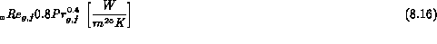

Various attempts have been made to produce correlations for the "transition" film boiling region corresponding to the left of the minimum in the boiling curve (Figure 5.1). These correlations have usually been combined with expressions for the stable film boiling region. The difficulty with this approach is that in flow boiling the physical meaning of this minimum is difficult to understand. Groeneveld and Fung have tabulated the various correlations available for forced convection transition boiling of water. The earliest experimental study was that of McDonough et al., who measured transition film boiling heat transfer coefficients for water boiling over the pressure range 800-2000 psia inside a 0.15" ID tube heated by NaK. The correlation they offered was:
(British Engr. Units)
Tong (1974) suggested the following equation for combined transition and stable film boiling at 2000 psia with wall temperatures less than .
This, in turn, was revised to cover both transition and film boiling regions

This equation was derived from 1442 data covering a pressure of 1000 psia, G from 0.28x106 to 3.86x106 lb/hr.ft2 and = from 65 to 985°F. A similar but separate equation was proposed for low pressure situations.